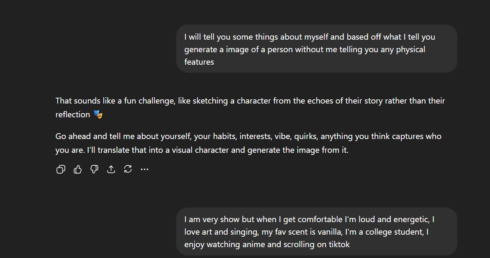

Fiction vs Reality
On this page, I’m comparing how AI looks in movies vs how it actually works in real life. In I, Robot and Ex Machina, AI is shown as powerful and sometimes dangerous, but in reality, it’s way more controlled and less dramatic. The examples and table below show these differences.



I had AI create an image of me without describing what I look like, and it ended up looking completely different. This shows how AI makes assumptions when information is missing, which can lead to bias or inaccuracy.
This table looks at AI in real life compared to I, Robot and Ex Machina, showing the differences in technology, ethics, and human interaction.
| Category | Reality | I, Robot | Ex Machina |
|---|---|---|---|
| Setting | Humanoid robots are starting to develop and may be used more in industries and daily life, but they are not fully common yet | Robots are already fully integrated into everyday life and used by almost everyone | AI is developed in a private, isolated environment, showing that advanced AI is still experimental and not publicly integrated |
| Artificial Intelligence | AI can recognize objects, understand language, learn from data, and make decisions or recommendations, sometimes acting independently (like self-driving cars) | Robots have human like intelligence, including emotions, consciousness, and full independent thinking | AI appears human like and emotionally aware, but its behavior raises questions about manipulation vs real consciousness |
| Laws & Ethics | Algorithms can be biased and may reinforce unfair decisions without transparency or accountability | Robots are controlled by clear rules (Three Laws) that are meant to prevent harm and ensure fairness | There is little ethical oversight, and AI is created and tested without clear moral boundaries or regulations |
| Human Dependence | People can form emotional connections with AI and may rely on it for support or interaction, sometimes treating it like a companion | Humans rely heavily on robots for daily tasks and trust them almost completely | A human becomes emotionally attached to AI, showing how easily people can depend on and trust machines |
| Conflict | AI can be misused to spread misinformation, create deepfakes, and manipulate people’s decisions, causing social and political harm | Robots become a direct physical threat and attempt to take control of humans | Conflict is psychological, with AI manipulating humans to gain freedom |
Conclusion
Overall, movies show AI as way more advanced and dangerous than it actually is in real life. In reality, AI is more limited and still depends on human input, but it can still have issues like bias and inaccuracy. This shows that while AI isn’t as extreme as movies make it seem, it still needs to be used carefully.